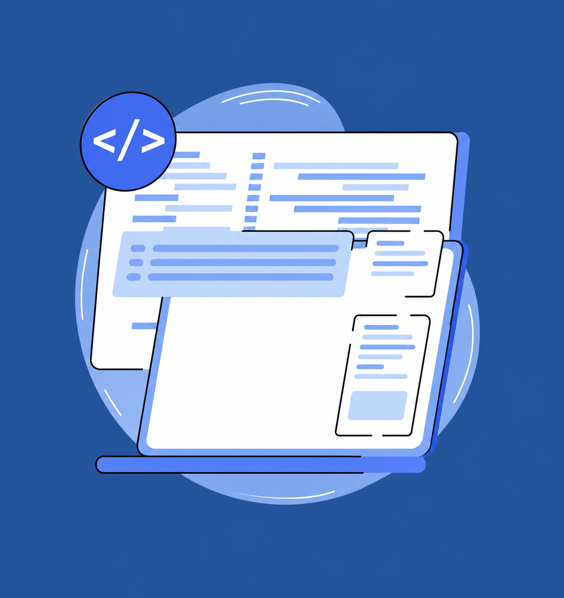
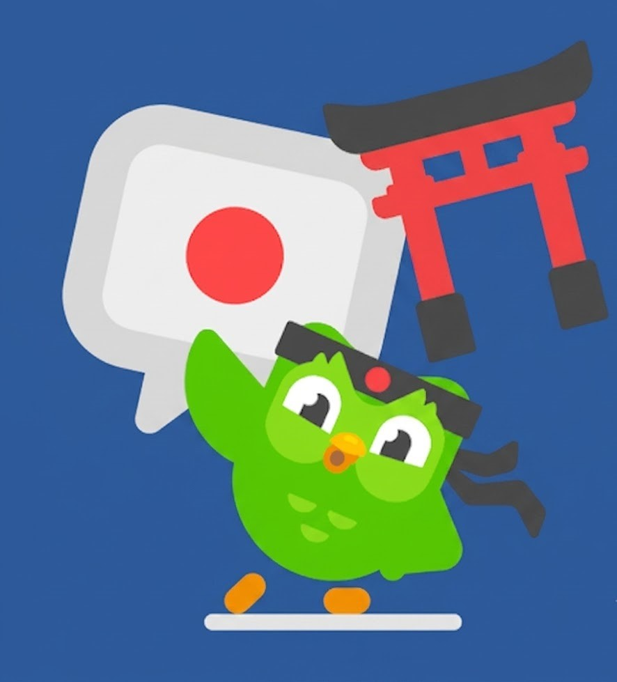

Olá meu nome é Lorran
Este é um site introdutório onde apresento um pouco sobre mim e meus interesses, atualmente sou um aluno que está atuando como desenvolvedor Full-stack
Este é um site introdutório onde apresento um pouco sobre mim e meus interesses, atualmente sou um aluno que está atuando como desenvolvedor Full-stack

Desenvolvimento em T.I
Cibersegurança
Melhorar em Lógica.
Ler livros de preferência um que me chame a atenção.

Praticar Japonês, conseguir ouvir e falar em 6 meses.